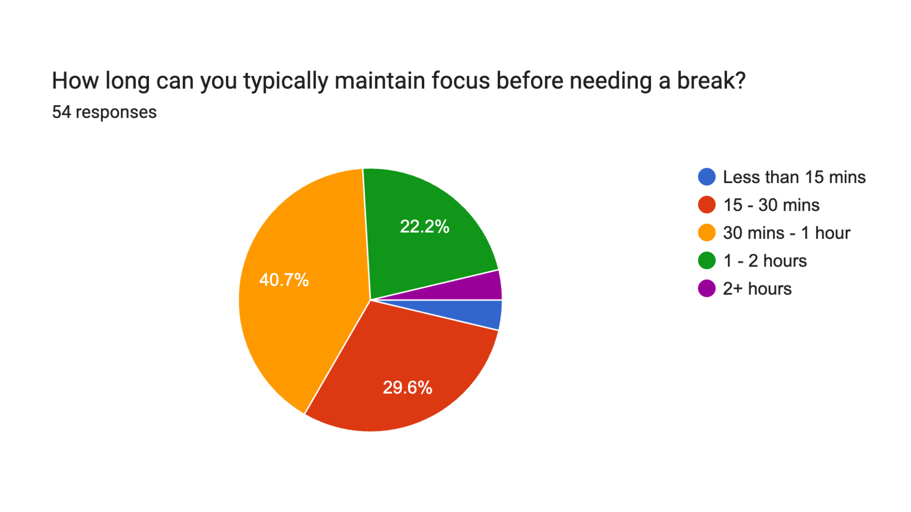

Purpose
Our Study
As part of a joint Public Health and Informatics initiative at UC Irvine, we are investigating the intersection of digital media and focus, particularly in relation to college students.
Background and Significance
College students are often taught the idea that with classes comes studying; focus is very important in retaining memory for the best academic performance. However, due to the present digital age, constant exposure to online applications has thinned attention spans and has become fragile.
With the rise of tools such as AI, short-form content media, and the simplification of educational texts, student engagement is declining. This research explores the relationship between mental stimulation and attention, helping students develop healthier habits.
Participate
Methodology
Research Protocol
Phase I: Preliminary Population Survey
To establish a baseline for contemporary student habits, we conducted an initial cross-sectional survey that garnered over 50 responses. This data allowed us to determine the specific musical genres utilized in the experimental phase.
Phase II: Experimental Design & Protocol
We developed a custom-coded testing environment to ensure standardized data collection. The experiment consists of six distinct trials designed to measure focus amidst various auditory environments.
The Schulte Grid Task: Participants are presented with a 7x7 grid of randomized numbers. They are asked to locate numbers 1 through 49 in ascending order as quickly as possible. This task measures mental speed and visual search efficiency.
- Control: Silence
- Pop: High Popularity
- Country: Low Popularity
- EDM: Median Popularity
- Classical: Historical Benchmark
- Preferred: Participant Choice
 Testing Tool: 7x7 Randomized Schulte Grid
Testing Tool: 7x7 Randomized Schulte Grid
Phase III: Data Collection & Metrics
For each round, we captured three primary data points to analyze cognitive load and performance:
Initial Survey Insights
Before the experiment, we surveyed 54 college students to understand their auditory study habits.

Focus Habits
A majority of students, 70.3%, report only being able to focus for less than 1 hour before needing a break.

Popular Genres
Pop is the most popular (63.3%), followed closely by R&B and Indie. Country is the least popular (8.2%).

Session Endurance
When studying with music, a significant 74% of students report their sessions typically last 2-3 hours.

Perceived Focus Impact
56% of students report that music improves concentration, while 34% acknowledge it can be a source of distraction.

Genre-Task Specificity
34% of students notice different genres work better for specific tasks, while a larger portion (38%) remains unsure.

Task-Specific Benefits
Music is most heavily utilized for creative work (82%) and problem-solving (68%), but less so for reading (12%).
Experimental Insights
Objective Performance Trends
EDM and Classical emerged as the strongest performers objectively, with average completion times of 73.6s and 78.3s.
Unlike the "No Music" control (93.2s), these environments provided a stable auditory backdrop that reduced internal mind-wandering. By minimizing cognitive friction, these genres allowed participants to enter a state of deep work more efficiently.
"Thinking about lyrics instead of the next number... my mind was all over the place."
— Test Participant"Wanted to sing along and would get a little distracted from the task."
— Test Participant"I was focusing a lot on the lyrics, and it was distracting."
— Test ParticipantThe "Lyric Tax" & Interference
Prominent, well-enunciated lyrics proved to be the single biggest disruptor to focus. Because the brain naturally tries to process clear speech, these songs created "cognitive competition" for the participants' attention.
While Pop is culturally familiar, its vocal clarity forced participants into "mental karaoke"—demonstrating how verbal interference slows visual search.
The BPM Advantage & Rhythm
Our data suggests that tempo is a stronger driver of performance than genre label. High-BPM tracks created a psychological "pace" that matched the clicking task, leading to a 20% speed increase.
Participants described these faster songs as providing an external "drive" anchor. Slower genres were often described as "sluggish," failing to maintain visual search momentum.
The Familiarity Paradox
Familiarity produced a split effect: it helped focus when music was beat-heavy (EDM), but became a liability when the song had singable lyrics.
Knowing lyrics caused participants to mentally anticipate the next line rather than the next number in the grid. This suggests that ideal study music depends on how much "active processing" it requires from the brain.